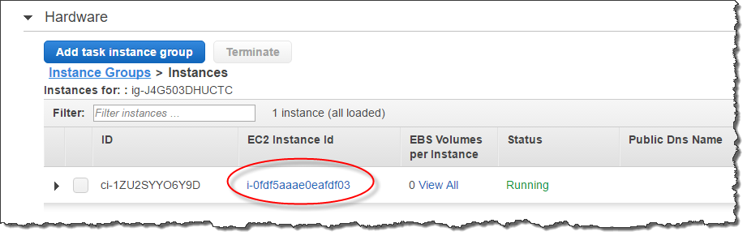

Die vorliegende Übersetzung wurde maschinell erstellt. Im Falle eines Konflikts oder eines Widerspruchs zwischen dieser übersetzten Fassung und der englischen Fassung (einschließlich infolge von Verzögerungen bei der Übersetzung) ist die englische Fassung maßgeblich.
Erstellen externer Schemata für Amazon Redshift Spectrum
Alle externen Tabellen müssen in einem externen Schema erstellt werden, das Sie mit einer CREATE EXTERNAL SCHEMA-Anweisung erstellen.
Anmerkung
Einige Anwendungen verwenden die Begriffe Datenbank und Schema mit gleicher Bedeutung. In Amazon Redshift verwenden wir den Begriff Schema.
Ein externes Amazon-Redshift-Schema verweist auf eine externe Datenbank in einem externen Datenkatalog. Sie können die externe Datenbank in Amazon Redshift, in Amazon Athena, in AWS Glue Data Catalog oder in einem Apache-Hive-Metastore, wie etwa Amazon EMR, erstellen. Wenn Sie eine externe Datenbank in Amazon Redshift erstellen, befindet sich diese im Athena-Datenkatalog. Zur Erstellung einer Datenbank in einem Hive-Metastore müssen Sie sie in Ihrer Hive-Anwendung erstellen.
Amazon Redshift benötigt in Ihrem Namen die Autorisierung zum Zugriff auf den Datenkatalog in Athena und die Datendateien in Amazon S3. Um diese Autorisierung zu gewähren, erstellen Sie zuerst eine AWS Identity and Access Management- (IAM) Rolle. Dann fügen Sie die Rolle Ihrem Cluster hinzu und stellen den Amazon-Ressourcennamen (ARN) für die Rolle in der CREATE EXTERNAL SCHEMA-Anweisung von Amazon Redshift bereit. Weitere Informationen zur -Autorisierung finden Sie unter IAM-Richtlinien für Amazon Redshift Spectrum.
Anmerkung
Wenn Sie derzeit externe Redshift-Spectrum-Tabellen im Athena-Datenkatalog haben, können Sie Ihren Athena-Datenkatalog zu einem AWS Glue-Datenkatalog migrieren. Zur Verwendung eines AWS Glue-Datenkatalogs mit Redshift Spectrum müssen Sie möglicherweise Ihre IAM-Richtlinien ändern. Weitere Informationen finden Sie unter Upgrade auf den AWS Glue-Datenkatalog im Amazon-Athena-Benutzerhandbuch.
Um eine externe Datenbank gleichzeitig mit der Erstellung eines externen Schemas zu erstellen, geben Sie FROM DATA CATALOG an, und schließen Sie die CREATE EXTERNAL DATABASE-Klausel in Ihre CREATE EXTERNAL SCHEMA-Anweisung ein.
Das folgende Beispiel erstellt ein externes Schema mit der Bezeichnung spectrum_schema unter Verwendung der externen Datenbank spectrum_db.
create external schema spectrum_schema from data catalog database 'spectrum_db' iam_role 'arn:aws:iam::123456789012:role/MySpectrumRole' create external database if not exists;
Wenn Sie Ihren Datenkatalog mit Athena verwalten, geben Sie den Athena-Datenbanknamen und die AWS-Region an, in der sich der Athena-Datenkatalog befindet.
Das folgende Beispiel erstellt ein externes Schema mit der Standarddatenbank sampledb im Athena-Datenkatalog.
create external schema athena_schema from data catalog database 'sampledb' iam_role 'arn:aws:iam::123456789012:role/MySpectrumRole' region 'us-east-2';
Anmerkung
Der Parameter region verweist auf die AWS-Region, in der sich der Athena-Datenkatalog befindet, nicht auf den Speicherort der Datendateien in Amazon S3.
Wenn Sie Ihren Datenkatalog mit einem Hive-Metastore, etwa mit Amazon EMR, verwalten, müssen Ihre Sicherheitsgruppen so konfiguriert sein, dass der Datenverkehr zwischen den Clustern möglich ist.
Geben Sie in der CREATE EXTERNAL SCHEMA-Anweisung FROM HIVE METASTORE an, und schließen Sie die URI und die Portnummer des Metastores ein. Im folgenden Beispiel wird ein externes Schema mittels einer Hive-Metastore-Datenbank namens erstellt hive_db.
create external schema hive_schema from hive metastore database 'hive_db' uri '172.10.10.10' port 99 iam_role 'arn:aws:iam::123456789012:role/MySpectrumRole'
Um die externen Schemata für Ihren Cluster anzuzeigen, fragen Sie die Katalogtabelle PG_EXTERNAL_SCHEMA oder die Ansicht SVV_EXTERNAL_SCHEMAS ab. Das folgende Beispiel fragt SVV_EXTERNAL_SCHEMAS ab, wobei PG_EXTERNAL_SCHEMA und PG_NAMESPACE verbunden werden.
select * from svv_external_schemas
Für die vollständige Befehlssyntax und Beispiele vgl. CREATE EXTERNAL SCHEMA.
Arbeiten mit externen Katalogen in Amazon Redshift Spectrum
Die Metadaten für externe Amazon-Redshift-Spectrum-Datenbanken und externe Tabellen werden in einem externen Datenkatalog gespeichert. Standardmäßig werden Redshift-Spectrum-Metadaten in einem Athena-Datenkatalog gespeichert. Sie können Redshift-Spectrum-Datenbanken und -Tabellen in Ihrer Athena-Konsole anzeigen und verwalten.
Sie können externe Datenbanken und externe Tabellen auch mit der Hive-Data-Definition-Language (DDL) unter Verwendung von Athena oder eines Hive-Metastores wie Amazon EMR erstellen und verwalten.
Anmerkung
Wir empfehlen die Verwendung von Amazon Redshift zur Erstellung und Verwaltung Ihrer externen Redshift-Spectrum-Datenbanken und externer Tabellen.
Anzeigen von Redshift-Spectrum-Datenbanken in Athena und AWS Glue
Sie können eine externe Datenbank erstellen, indem Sie die Klausel CREATE EXTERNAL DATABASE IF NOT EXISTS in Ihre CREATE EXTERNAL SCHEMA-Anweisung aufnehmen. In solchen Fällen werden die Metadaten der externen Datenbank in Ihrem Datenkatalog gespeichert. Die Metadaten für externe Tabellen, die Sie mit Qualifizierung durch das externe Schema erstellen, werden ebenfalls in Ihrem -Datenkatalog gespeichert.
Athena und AWS Glue verwalten für jede unterstützte AWS-Region einen Datenkatalog. Melden Sie sich zur Anzeige der Tabellenmetadaten bei der Athena- oder AWS Glue-Konsole an. Wählen Sie in Athena Data sources (Datenquellen) und AWS Glue aus. Zeigen Sie dann die Details Ihrer Datenbank an. Wählen Sie in AWS Glue Data sources (Datenquellen) und Ihre externe Datenbank aus. Zeigen Sie dann die Details Ihrer Datenbank an.
Wenn Sie Ihre externen Tabellen mit Athena erstellen und verwalten, registrieren Sie die Datenbank mit CREATE EXTERNAL SCHEMA. Beispielsweise registriert der folgende Befehl die Athena-Datenbank mit der Bezeichnung sampledb.
create external schema athena_sample from data catalog database 'sampledb' iam_role 'arn:aws:iam::123456789012:role/mySpectrumRole' region 'us-east-1';
Wenn Sie die Systemansicht SVV_EXTERNAL_TABLES abfragen, sehen Sie Tabellen in der Athena-sampledb-Datenbank und die Tabellen, die Sie in Amazon Redshift erstellt haben.
select * from svv_external_tables;
schemaname | tablename | location --------------+------------------+-------------------------------------------------------- athena_sample | elb_logs | s3://athena-examples/elb/plaintext athena_sample | lineitem_1t_csv | s3://myspectrum/tpch/1000/lineitem_csv athena_sample | lineitem_1t_part | s3://myspectrum/tpch/1000/lineitem_partition spectrum | sales | s3://redshift-downloads/tickit/spectrum/sales spectrum | sales_part | s3://redshift-downloads/tickit/spectrum/sales_part
Registrieren einer Apache Hive-Metastore-Datenbank
Wenn Sie externe Tabellen in einem Apache Hive-Metastore erstellen, können Sie diese Tabellen mit CREATE EXTERNAL SCHEMA in Redshift Spectrum registrieren.
Geben Sie in der CREATE EXTERNAL SCHEMA-Anweisung die Klausel FROM HIVE METASTORE sowie die URI und die Portnummer des Hive-Metastores an. Die IAM-Rolle muss die Berechtigung zum Zugriff auf Amazon S3 enthalten, Athena-Berechtigungen sind jedoch nicht erforderlich. Das folgende Beispiel registriert einen Hive-Metastore.
create external schema if not exists hive_schema from hive metastore database 'hive_database' uri 'ip-10-0-111-111.us-west-2.compute.internal' port 9083 iam_role 'arn:aws:iam::123456789012:role/mySpectrumRole';
Zugriff Ihres Amazon-Redshift-Clusters auf Ihren Amazon-EMR-Cluster
Wenn sich Ihr Hive-Metastore in Amazon EMR befindet, müssen Sie Ihrem Amazon-Redshift-Cluster den Zugriff auf Ihren Amazon-Redshift-Cluster gewähren. Dazu erstellen Sie eine Amazon-EC2-Sicherheitsgruppe. Sie lassen dann den gesamten eingehenden Datenverkehr an die EC2-Sicherheitsgruppe aus der Sicherheitsgruppe Ihres Amazon-Redshift-Clusters und der Sicherheitsgruppe Ihres Amazon-EMR-Clusters zu. Dann fügen Sie die EC2-Sicherheitsgruppe Ihrem Amazon-Redshift-Cluster und Ihrem Amazon-EMR-Cluster hinzu.
Aufrufen des Namens der Sicherheitsgruppe Ihres Amazon-Redshift-Clusters
Um die Sicherheitsgruppe anzuzeigen, gehen Sie wie folgt vor:
-
Melden Sie sich bei der AWS Management Console an und öffnen Sie die Amazon-Redshift-Konsole unter https://console.aws.amazon.com/redshift/
. -
Wählen Sie im Navigationsmenü die Option Clusters (Cluster) und anschließend in der Liste den gewünschten Cluster aus, um die Details zu dem Cluster zu öffnen.
-
Wählen Sie Properties (Eigenschaften) aus und sehen Sie sich den Abschnitt Network and security (Netzwerk und Sicherheit) an.
-
Machen Sie Ihre Sicherheitsgruppe in VPC Security Group (VPC-Sicherheitsgruppe) ausfindig und notieren Sie sie.
Aufrufen des Namens der Amazon-EMR-Hauptknoten-Sicherheitsgruppe
Öffnen Sie Ihren Amazon-EMR-Cluster. Weitere Informationen finden Sie unter Verwenden von Sicherheitskonfigurationen zur Einrichtung der Clustersicherheit im Amazon-EMR-Verwaltungshandbuch
Notieren Sie sich unter Security and access (Sicherheit und Zugriff) den Namen der Amazon-EMR-Hauptknoten-Sicherheitsgruppe.

So erstellen oder modifizieren Sie eine Amazon-EC2-Sicherheitsgruppe, um eine Verbindung zwischen Amazon Redshift und Amazon EMR zuzulassen
Wählen Sie im Amazon-EC2-Dashboard Security Groups (Sicherheitsgruppen) aus. Weitere Informationen finden Sie unter Sicherheitsgruppenregeln im Amazon-EC2-Benutzerhandbuch für Linux-Instances.
Wählen Sie Create security group (Sicherheitsgruppe erstellen) aus.
Wenn Sie VPC verwenden, wählen Sie die VPC aus, in der sich sowohl Ihr Amazon-Redshift- als auch Ihr Amazon-EMR-Cluster befinden.
Fügen Sie eine eingehende Regel hinzu.
Wählen Sie für Type (Typ) die Option Custom TCP (Benutzerdefiniertes TCP) aus.
Wählen Sie für Source (Quelle) die Option Custom (Benutzerdefiniert) aus.
Geben Sie den Namen Ihrer Amazon-Redshift-Sicherheitsgruppe ein.
Fügen Sie eine weitere eingehende Regel hinzu.
Wählen Sie unter Type die Option TCP aus.
Geben Sie für Port Range (Portbereich) 9083 ein.
Anmerkung
Der Standardport für einen EMR-HMS ist 9083. Wenn Ihr HMS einen anderen Port verwendet, geben Sie diesen in der eingehenden Regel und der Definition des externen Schemas an.
Wählen Sie für Source (Quelle) die Option Custom (Benutzerdefiniert) aus.
Geben Sie einen Namen und eine Beschreibung für die Sicherheitsgruppe ein.
Wählen Sie Create security group (Sicherheitsgruppe erstellen) aus.
So fügen Sie die Amazon-EC2-Sicherheitsgruppe, die Sie im vorherigen Verfahren erstellt haben, Ihrem Amazon-Redshift-Cluster hinzu
Wählen Sie Ihren Cluster in Amazon Redshift aus.
Wählen Sie Properties (Eigenschaften).
Rufen Sie die Network and security settings (Netzwerk- und Sicherheitseinstellungen) auf und wählen Sie Edit (Bearbeiten) aus.
Wählen Sie in VPC Security Group (VPC-Sicherheitsgruppe) den Namen der neuen Sicherheitsgruppe aus.
Wählen Sie Save Changes (Änderungen speichern).
So fügen Sie die Amazon-EC2-Sicherheitsgruppe zu Ihrem Amazon-EMR-Cluster hinzu
Wählen Sie Ihren Cluster in Amazon EMR aus. Weitere Informationen finden Sie unter Verwenden von Sicherheitskonfigurationen zur Einrichtung der Clustersicherheit im Amazon-EMR-Verwaltungshandbuch
Wählen Sie unter Hardware den Link für den Master-Knoten.
Wählen Sie den Link in der Spalte EC2 instance ID (EC2-Instance-ID).
Wählen Sie für Actions (Aktionen) die Option Security (Sicherheit), Change security groups (Sicherheitsgruppen ändern) aus.
Wählen Sie unter Associated sercurity groups (Zugehörige Sicherheitsgruppen) die neue Sicherheitsgruppe und dann Add security group (Sicherheitsgruppe hinzufügen) aus.
Wählen Sie Save (Speichern) aus.